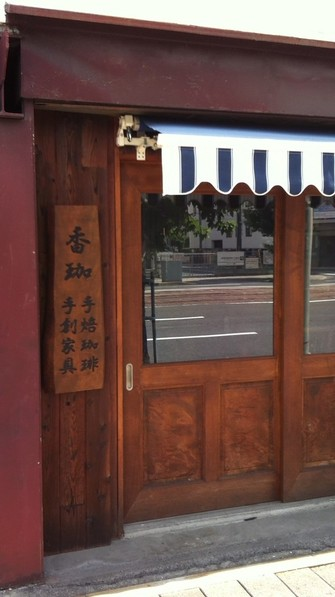
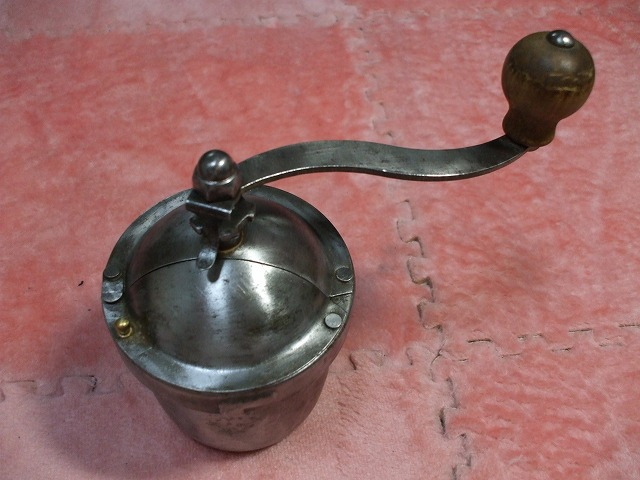

| 店名 | 香珈珈琲（かかこーひー） |
|---|---|
| 住所 | 〒730-0052 広島市中区千田町2-10-6 |
| 営業日 | 木金土曜日 11:00–17:00 |
| 営業時間 | 11:00 – 17:00 |
| 定休日 | 臨時休業あり 営業カレンダーをご確認ください |
| 最寄り | 広島電鉄「広電本社前」電停より徒歩すぐ 日赤病院 近く |
広島電鉄「広電本社前」電停よりすぐ。広島市内中心部からもアクセスしやすい立地です。
広島市役所、日赤病院、広大跡地からもすぐです。複数の路線からアクセス可能。
広島で一番入りにくいお店です。近隣のコインパーキングをご利用ください。

